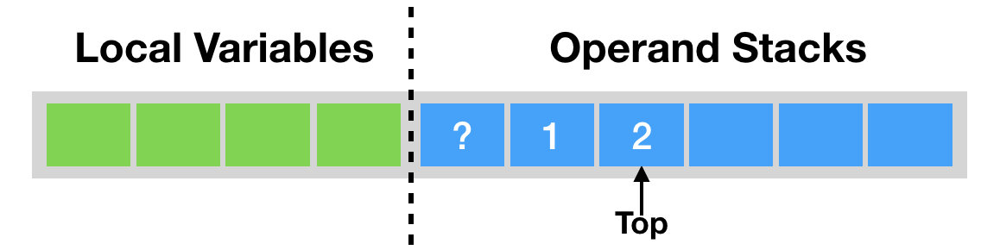
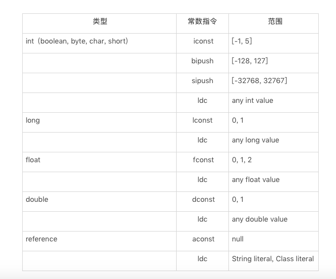
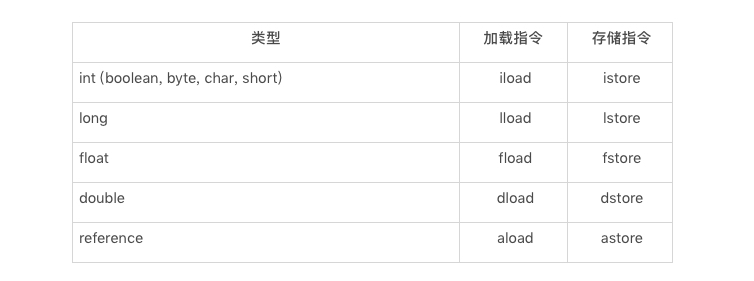
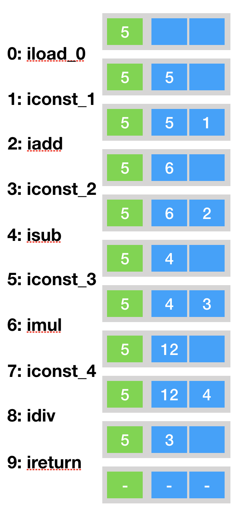
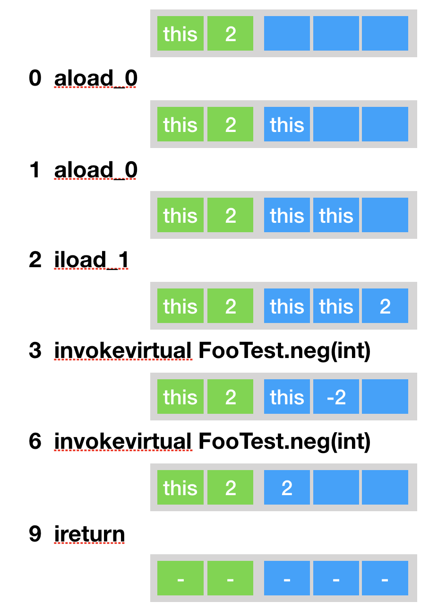
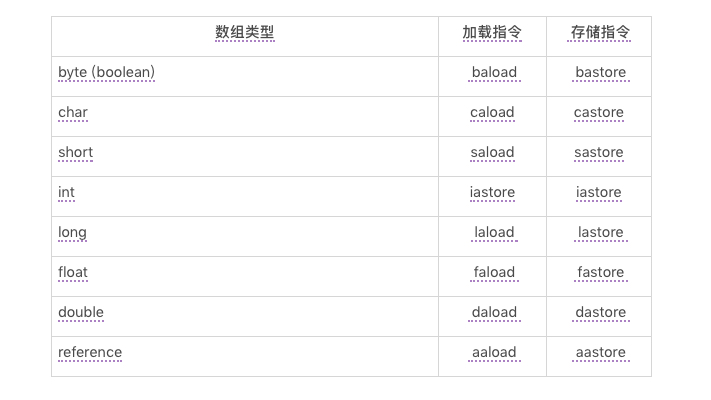
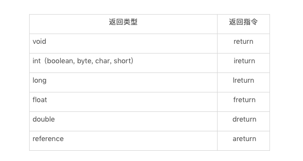

- 00 开篇词 为什么我们要学习Java虚拟机？.md
- 01 Java代码是怎么运行的？.md
- 02 Java的基本类型.md
- 03 Java虚拟机是如何加载Java类的.md
- 04 JVM是如何执行方法调用的？（上）.md
- 05 JVM是如何执行方法调用的？（下）.md
- 06 JVM是如何处理异常的？.md
- 07 JVM是如何实现反射的？.md
- 08 JVM是怎么实现invokedynamic的？（上）.md
- 09 JVM是怎么实现invokedynamic的？（下）.md
- 10 Java对象的内存布局.md
- 11 垃圾回收（上）.md
- 12 垃圾回收（下）.md
- 13 Java内存模型.md
- 14 Java虚拟机是怎么实现synchronized的？.md
- 15 Java语法糖与Java编译器.md
- 16 即时编译（上）.md
- 17 即时编译（下）.md
- 18 即时编译器的中间表达形式.md
- 19 Java字节码（基础篇）.md
- 20 方法内联（上）.md
- 21 方法内联（下）.md
- 22 HotSpot虚拟机的intrinsic.md
- 23 逃逸分析.md
- 24 字段访问相关优化.md
- 25 循环优化.md
- 26 向量化.md
- 27 注解处理器.md
- 28 基准测试框架JMH（上）.md
- 29 基准测试框架JMH（下）.md
- 30 Java虚拟机的监控及诊断工具（命令行篇）.md
- 31 Java虚拟机的监控及诊断工具（GUI篇）.md
- 32 JNI的运行机制.md
- 33 Java Agent与字节码注入.md
- 34 Graal：用Java编译Java.md
- 35 Truffle：语言实现框架.md
- 36 SubstrateVM：AOT编译框架.md
- 尾声丨道阻且长，努力加餐.html.md
- 工具篇 常用工具介绍.md
19 Java字节码（基础篇）
在前面的篇章中，有不少同学反馈对 Java 字节码并不是特别熟悉。那么今天我便来系统性地介绍一遍 Java 字节码。
操作数栈
我们知道，Java 字节码是 Java 虚拟机所使用的指令集。因此，它与 Java 虚拟机基于栈的计算模型是密不可分的。
在解释执行过程中，每当为 Java 方法分配栈桢时，Java 虚拟机往往需要开辟一块额外的空间作为操作数栈，来存放计算的操作数以及返回结果。
具体来说便是：执行每一条指令之前，Java 虚拟机要求该指令的操作数已被压入操作数栈中。在执行指令时，Java 虚拟机会将该指令所需的操作数弹出，并且将指令的结果重新压入栈中。

以加法指令 iadd 为例。假设在执行该指令前，栈顶的两个元素分别为 int 值 1 和 int 值 2，那么 iadd 指令将弹出这两个 int，并将求得的和 int 值 3 压入栈中。
由于 iadd 指令只消耗栈顶的两个元素，因此，对于离栈顶距离为 2 的元素，即图中的问号，iadd 指令并不关心它是否存在，更加不会对其进行修改。
Java 字节码中有好几条指令是直接作用在操作数栈上的。最为常见的便是 dup： 复制栈顶元素，以及 pop：舍弃栈顶元素。
dup 指令常用于复制 new 指令所生成的未经初始化的引用。例如在下面这段代码的 foo 方法中，当执行 new 指令时，Java 虚拟机将指向一块已分配的、未初始化的内存的引用压入操作数栈中。
public void foo() {
Object o = new Object();
}
// 对应的字节码如下：
public void foo();
0 new java.lang.Object [3]
3 dup
4 invokespecial java.lang.Object() [8]
7 astore_1 [o]
8 return
接下来，我们需要以这个引用为调用者，调用其构造器，也就是上面字节码中的 invokespecial 指令。要注意，该指令将消耗操作数栈上的元素，作为它的调用者以及参数（不过 Object 的构造器不需要参数）。
因此，我们需要利用 dup 指令复制一份 new 指令的结果，并用来调用构造器。当调用返回之后，操作数栈上仍有原本由 new 指令生成的引用，可用于接下来的操作（即偏移量为 7 的字节码，下面会介绍到）。
pop 指令则常用于舍弃调用指令的返回结果。例如在下面这段代码的 foo 方法中，我将调用静态方法 bar，但是却不用其返回值。
由于对应的 invokestatic 指令仍旧会将返回值压入 foo 方法的操作数栈中，因此 Java 虚拟机需要额外执行 pop 指令，将返回值舍弃。
public static boolean bar() {
return false;
}
public void foo() {
bar();
}
// foo 方法对应的字节码如下：
public void foo();
0 invokestatic FooTest.bar() : boolean [24]
3 pop
4 return
需要注意的是，上述两条指令只能处理非 long 或者非 double 类型的值，这是因为 long 类型或者 double 类型的值，需要占据两个栈单元。当遇到这些值时，我们需要同时复制栈顶两个单元的 dup2 指令，以及弹出栈顶两个单元的 pop2 指令。
除此之外，不算常见但也是直接作用于操作数栈的还有 swap 指令，它将交换栈顶两个元素的值。
在 Java 字节码中，有一部分指令可以直接将常量加载到操作数栈上。以 int 类型为例，Java 虚拟机既可以通过 iconst 指令加载 -1 至 5 之间的 int 值，也可以通过 bipush、sipush 加载一个字节、两个字节所能代表的 int 值。
Java 虚拟机还可以通过 ldc 加载常量池中的常量值，例如 ldc #18 将加载常量池中的第 18 项。
这些常量包括 int 类型、long 类型、float 类型、double 类型、String 类型以及 Class 类型的常量。

常数加载指令表
正常情况下，操作数栈的压入弹出都是一条条指令完成的。唯一的例外情况是在抛异常时，Java 虚拟机会清除操作数栈上的所有内容，而后将异常实例压入操作数栈上。
局部变量区
Java 方法栈桢的另外一个重要组成部分则是局部变量区，字节码程序可以将计算的结果缓存在局部变量区之中。
实际上，Java 虚拟机将局部变量区当成一个数组，依次存放 this 指针（仅非静态方法），所传入的参数，以及字节码中的局部变量。
和操作数栈一样，long 类型以及 double 类型的值将占据两个单元，其余类型仅占据一个单元。
public void foo(long l, float f) {
{
int i = 0;
}
{
String s = "Hello, World";
}
}
以上面这段代码中的 foo 方法为例，由于它是一个实例方法，因此局部变量数组的第 0 个单元存放着 this 指针。
第一个参数为 long 类型，于是数组的 1、2 两个单元存放着所传入的 long 类型参数的值。第二个参数则是 float 类型，于是数组的第 3 个单元存放着所传入的 float 类型参数的值。
在方法体里的两个代码块中，我分别定义了两个局部变量 i 和 s。由于这两个局部变量的生命周期没有重合之处，因此，Java 编译器可以将它们编排至同一单元中。也就是说，局部变量数组的第 4 个单元将为 i 或者 s。
存储在局部变量区的值，通常需要加载至操作数栈中，方能进行计算，得到计算结果后再存储至局部变量数组中。这些加载、存储指令是区分类型的。例如，int 类型的加载指令为 iload，存储指令为 istore。

局部变量区访问指令表局部变量数组的加载、存储指令都需要指明所加载单元的下标。举例来说，aload 0 指的是加载第 0 个单元所存储的引用，在前面示例中的 foo 方法里指的便是加载 this 指针。
在我印象中，Java 字节码中唯一能够直接作用于局部变量区的指令是 iinc M N（M 为非负整数，N 为整数）。该指令指的是将局部变量数组的第 M 个单元中的 int 值增加 N，常用于 for 循环中自增量的更新。
public void foo() {
for (int i = 100; i>=0; i--) {}
}
// 对应的字节码如下：
public void foo();
0 bipush 100
2 istore_1 [i]
3 goto 9
6 iinc 1 -1 [i] // i--
9 iload_1 [i]
10 ifge 6
13 return
综合示例
下面我们来看一个综合的例子：
public static int bar(int i) {
return ((i + 1) - 2) * 3 / 4;
}
// 对应的字节码如下：
Code:
stack=2, locals=1, args_size=1
0: iload_0
1: iconst_1
2: iadd
3: iconst_2
4: isub
5: iconst_3
6: imul
7: iconst_4
8: idiv
9: ireturn
这里我定义了一个 bar 方法。它将接收一个 int 类型的参数，进行一系列计算之后再返回。
对应的字节码中的 stack=2, locals=1 代表该方法需要的操作数栈空间为 2，局部变量数组空间为 1。当调用 bar(5) 时，每条指令执行前后局部变量数组空间以及操作数栈的分布如下：

Java 字节码简介
前面我已经介绍了加载常量指令、操作数栈专用指令以及局部变量区访问指令。下面我们来看看其他的类别。
Java 相关指令，包括各类具备高层语义的字节码，即 new（后跟目标类，生成该类的未初始化的对象），instanceof（后跟目标类，判断栈顶元素是否为目标类 / 接口的实例。是则压入 1，否则压入 0），checkcast（后跟目标类，判断栈顶元素是否为目标类 / 接口的实例。如果不是便抛出异常），athrow（将栈顶异常抛出），以及 monitorenter（为栈顶对象加锁）和 monitorexit（为栈顶对象解锁）。
此外，该类型的指令还包括字段访问指令，即静态字段访问指令 getstatic、putstatic，和实例字段访问指令 getfield、putfield。这四条指令均附带用以定位目标字段的信息，但所消耗的操作数栈元素皆不同。
以 putfield 为例，在上图中，它会把值 v 存储至对象 obj 的目标字段之中。
方法调用指令，包括 invokestatic，invokespecial，invokevirtual，invokeinterface 以及 invokedynamic。这几条字节码我们已经反反复复提及了，就不再具体介绍各自的含义了。
除 invokedynamic 外，其他的方法调用指令所消耗的操作数栈元素是根据调用类型以及目标方法描述符来确定的。在进行方法调用之前，程序需要依次压入调用者（invokestatic 不需要），以及各个参数。
public int neg(int i) {
return -i;
}
public int foo(int i) {
return neg(neg(i));
}
// foo 方法对应的字节码如下：foo 方法对应的字节码如下：
public int foo(int i);
0 aload_0 [this]
1 aload_0 [this]
2 iload_1 [i]
3 invokevirtual FooTest.neg(int) : int [25]
6 invokevirtual FooTest.neg(int) : int [25]
9 ireturn
以上面这段代码为例，当调用 foo(2) 时，每条指令执行前后局部变量数组空间以及操作数栈的分布如下所示：

数组相关指令，包括新建基本类型数组的 newarray，新建引用类型数组的 anewarray，生成多维数组的 multianewarray，以及求数组长度的 arraylength。另外，它还包括数组的加载指令以及存储指令。这些指令是区分类型的。例如，int 数组的加载指令为 iaload，存储指令为 iastore。

数组访问指令表
控制流指令，包括无条件跳转 goto，条件跳转指令，tableswitch 和 lookupswtich（前者针对密集的 cases，后者针对稀疏的 cases），返回指令，以及被废弃的 jsr，ret 指令。其中返回指令是区分类型的。例如，返回 int 值的指令为 ireturn。

返回指令表
除返回指令外，其他的控制流指令均附带一个或者多个字节码偏移量，代表需要跳转到的位置。例如下面的 abs 方法中偏移量为 1 的条件跳转指令，当栈顶元素小于 0 时，跳转至偏移量为 6 的字节码。
public int abs(int i) {
if (i >= 0) {
return i;
}
return -i;
}
// 对应的字节码如下所示：
public int abs(int i);
0 iload_1 [i]
1 iflt 6
4 iload_1 [i]
5 ireturn
6 iload_1 [i]
7 ineg
8 ireturn
剩余的 Java 字节码几乎都和计算相关，这里就不再详细阐述了。
总结与实践
今天我简单介绍了各种类型的 Java 字节码。
Java 方法的栈桢分为操作数栈和局部变量区。通常来说，程序需要将变量从局部变量区加载至操作数栈中，进行一番运算之后再存储回局部变量区中。
Java 字节码可以划分为很多种类型，如加载常量指令，操作数栈专用指令，局部变量区访问指令，Java 相关指令，方法调用指令，数组相关指令，控制流指令，以及计算相关指令。
© 2019 - 2023 Liangliang Lee. Powered by gin and hexo-theme-book.